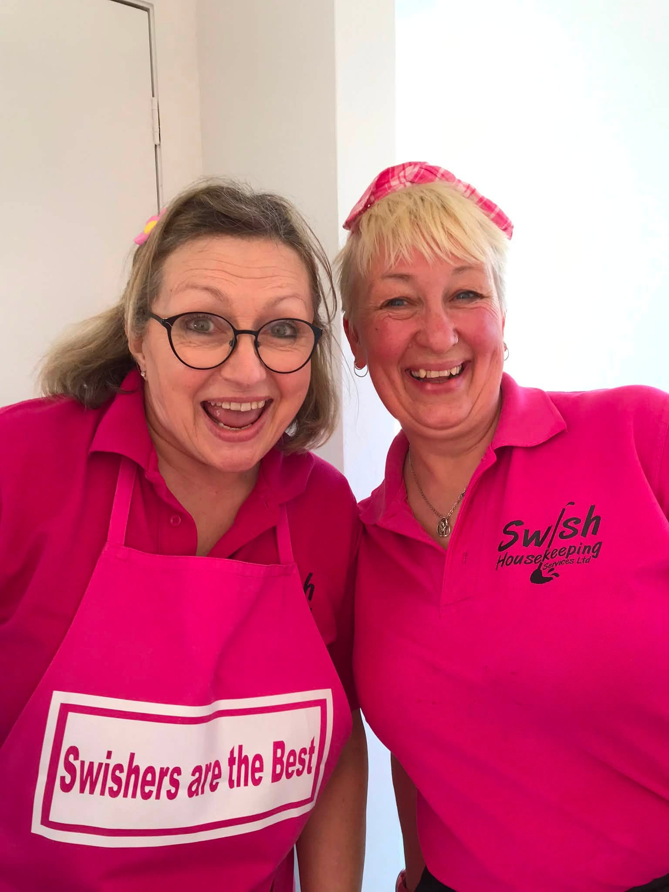
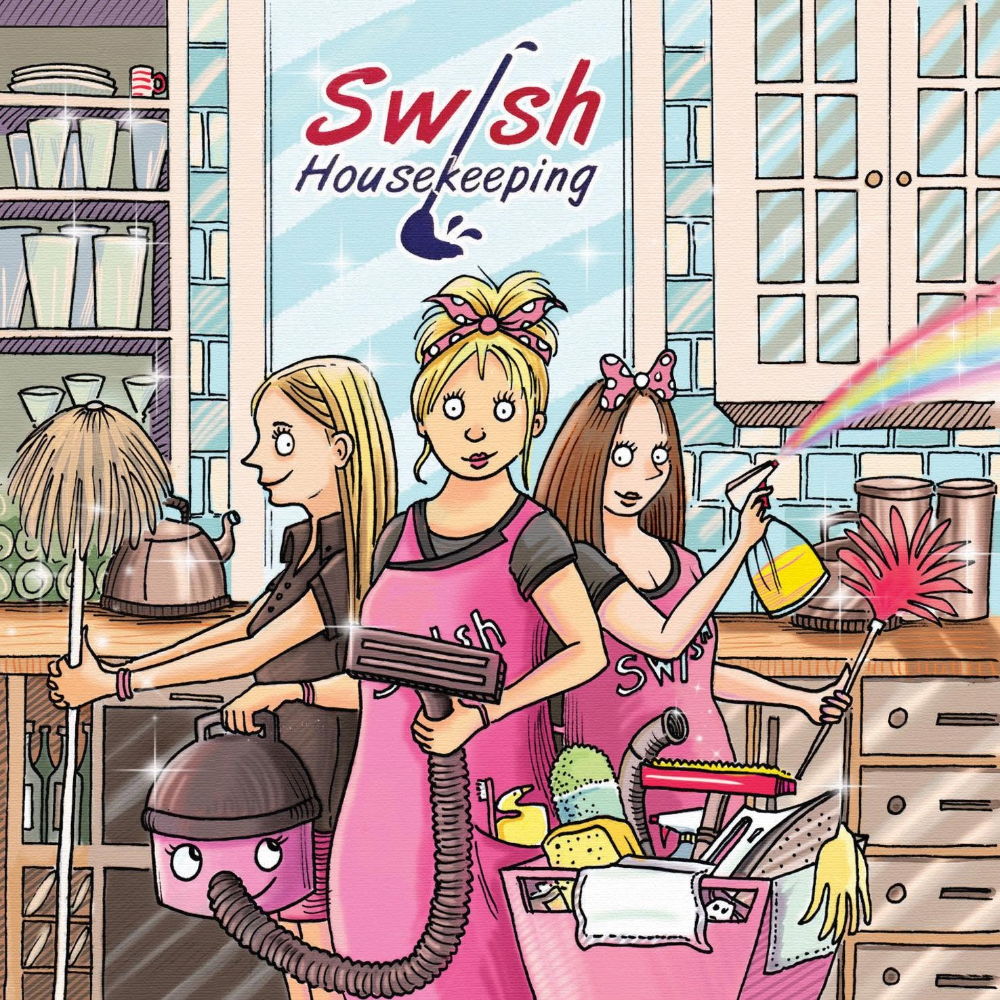
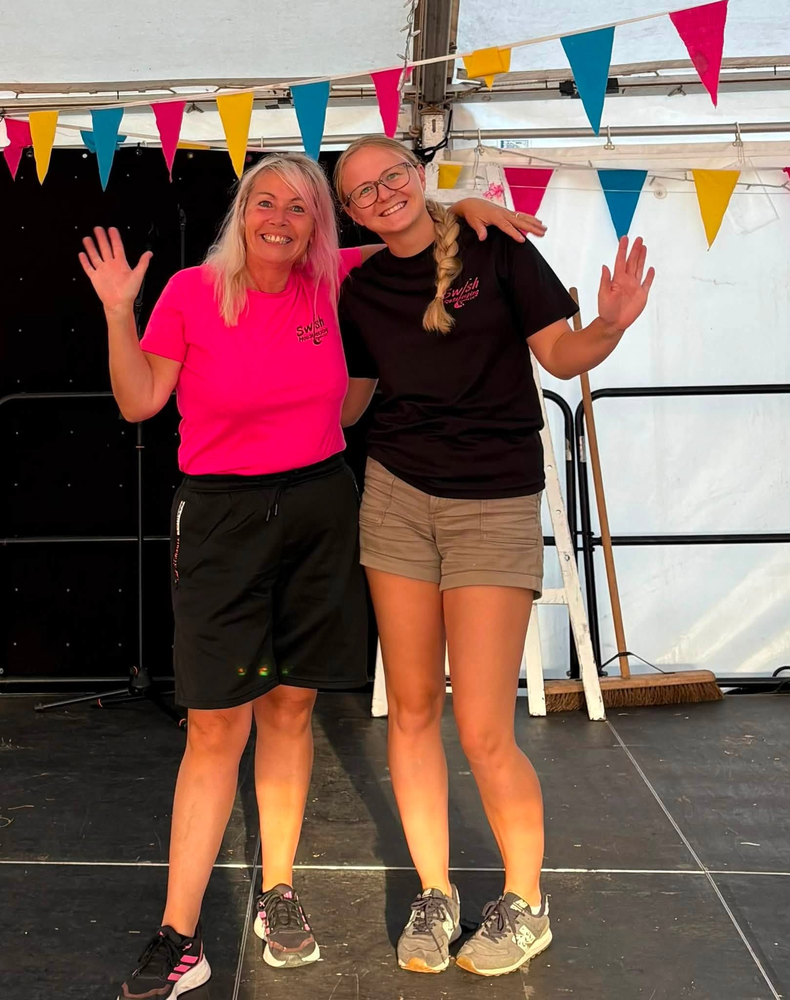
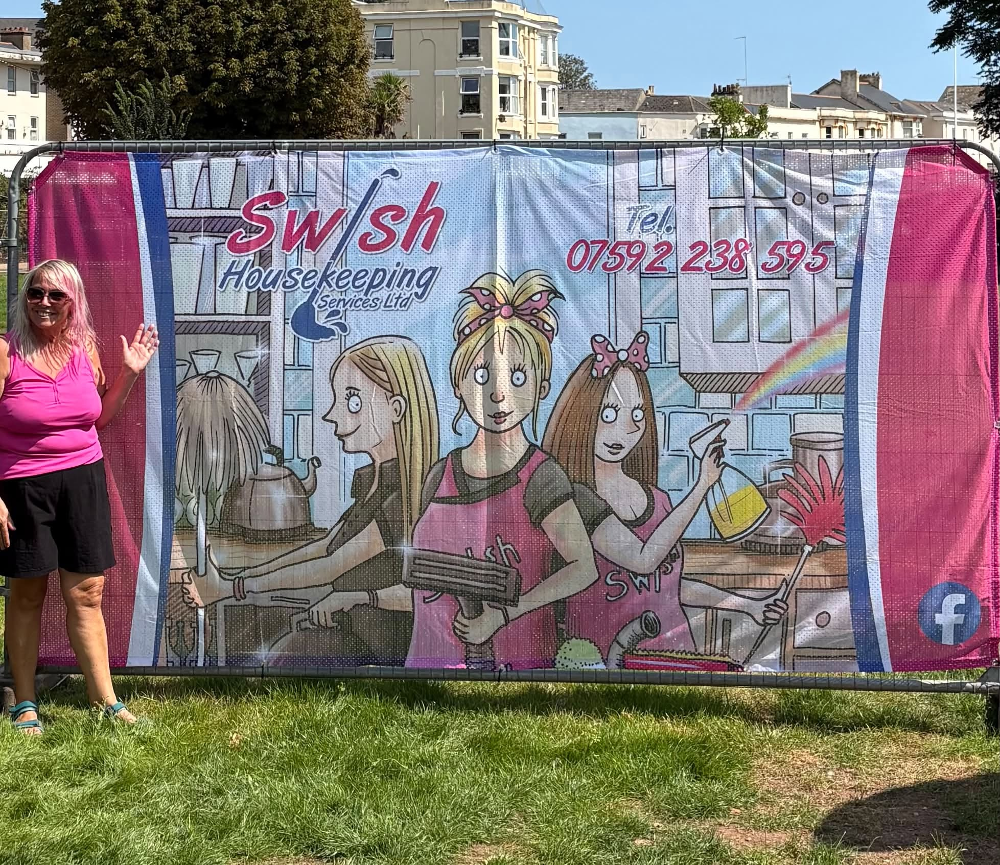

Housework & general cleaning
Regular household help and everyday cleaning that keeps your home feeling cared for.
Swish is Sarah’s small, friendly housekeeping business offering cleaning, ironing, errands, companionship and everyday practical help — all with a genuinely personal touch.


Some customers need regular cleaning. Others need help with errands, ironing, a commercial space or simply a friendly face alongside practical support.
Regular household help and everyday cleaning that keeps your home feeling cared for.
One less job on your list, handled by the Swish team.
Need something picked up, dropped off or sorted? Ask Sarah and the team will see what they can do.
A chat, a little light activity or simply some friendly company alongside the practical help.
Friendly, dependable cleaning support for local workplaces and commercial spaces.

Swish is a small business run by Sarah. The aim is simple: hardworking, friendly people offering a personal service to people in all walks of life.
The team can clean, iron, run errands and help with practical jobs, but Swish is also about the relationship with the person behind the front door.
Bright, local and definitely not boring. Here are a few glimpses of the team and the personality behind Swish.



Tell Sarah what you need. If the team can help, she’ll talk you through it.